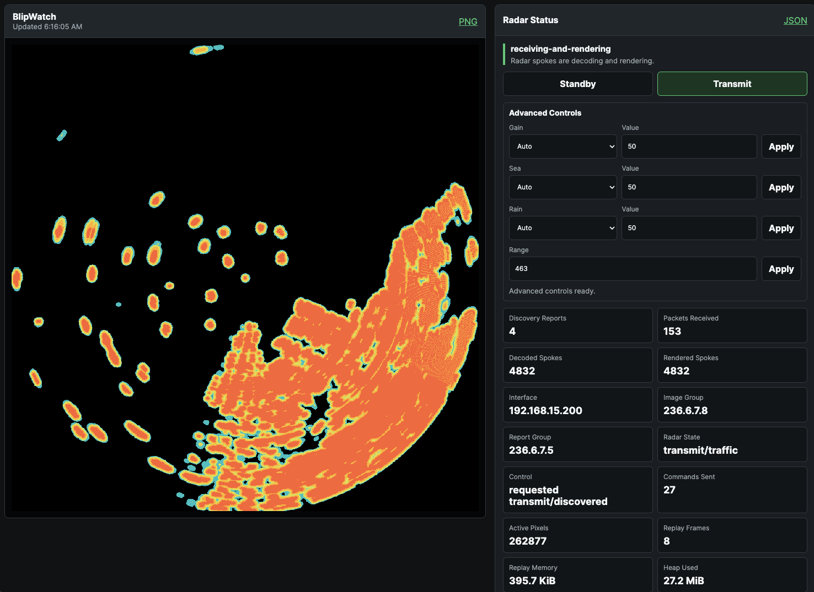
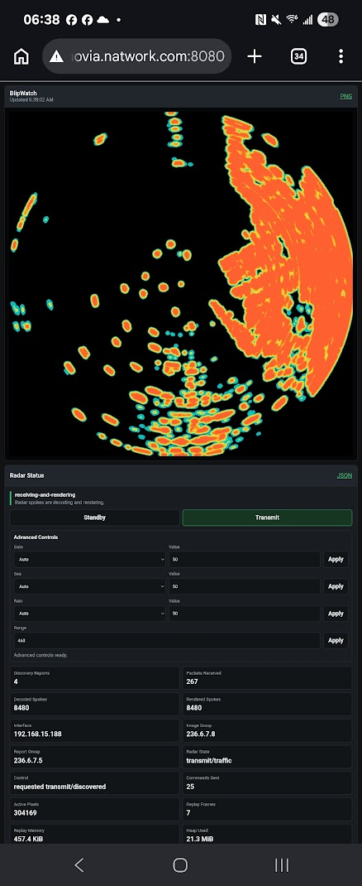

Open-source radar server for Navico/B&G/Simrad HALO radars. Receive live radar data over your local network and view it from any device with a web browser.
Early DevelopmentBlipWatch is a lightweight Node.js server that connects directly to Navico HALO-family marine radars over Ethernet. It decodes live radar spoke data, renders radar imagery in real time, and serves it through standard HTTP and WebSocket endpoints — making radar data accessible to any device on your network.
Whether you want to view radar on a tablet in the cockpit, a phone belowdecks, or monitor remotely from a PC, BlipWatch provides the data pipeline to make that possible.
Decodes HALO radar spokes and renders 1024×1024 PNG radar images in real time.
RESTful endpoints for radar imagery, status, and replay. WebSocket streaming for live updates.
Passive multicast discovery automatically finds HALO radars on the local network.
In-memory replay lets you scrub back through recent radar history.
Built-in browser UI for live radar viewing, replay controls, and diagnostics.
Opt-in transmit/standby, range, gain, sea clutter, and rain clutter controls via UDP commands.
Runs on macOS, Linux, and Windows. Docker images for AMD64 and ARM64 (Raspberry Pi).
Licensed under GPL-3.0. Inspect, modify, and contribute freely.


BlipWatch is in early active development. The core radar receive, decode, and render pipeline is functional and has been validated against real HALO hardware on a local Ethernet network. The HTTP API, WebSocket streaming, replay buffer, and browser dashboard are operational.
Current development is focused on hardware integration maturity, protocol coverage, rendering refinements, and packaging for easier installation.
This project is mostly vibe-coded with AI assistance, but required hands-on manual coding and real-world debugging by a software engineer with 30+ years of experience — developed and tested using a real Simrad HALO20+ radar while at anchor.
The project is not yet recommended for production or safety-critical use. APIs and configuration may change between releases.
BlipWatch is experimental situational-awareness software. It is not a certified navigation aid, radar ARPA, collision-avoidance system, or safety-of-life system.
Do not rely on BlipWatch as a substitute for proper watchkeeping, certified marine instruments, or any safety-of-life function. Maintain compliance with COLREGS Rule 5 (proper lookout) and all applicable maritime regulations at all times.